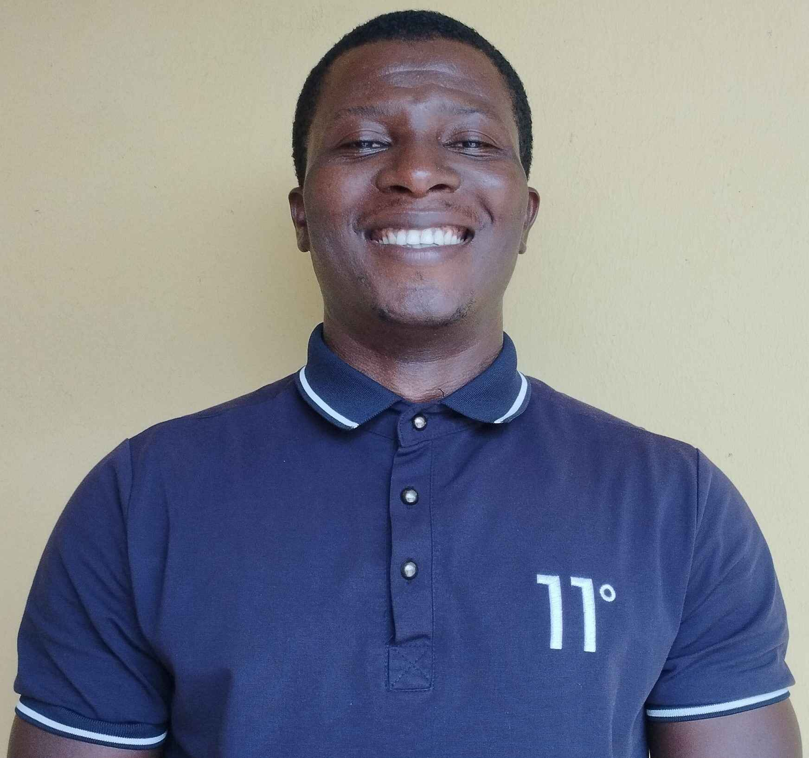

About Me
Hello! My name is Emediong Udofia and I am from Akwa Ibom, Nigeria. I served my mission in the Ghana Accra mission. I started my mission in the year 2013 and finished in the year 2015. Upon my return enrolled in a university here in Nigeria where I studied Electrical/Electroic Engineering. I have obtained a bachlor's degree in Electrical Engineering from the University of Uyo, Nigeria, with one year internship experience in a 132/33kv Transmission Sub-station.
Akwa Ibom, Nigeria.
Official Flag Of Nigeria
Akwa Ibom state is in the southern part of Nigeria. It is known all over the country as the most peaceful state in Nigeria. It's major natural resoource is crude oil. It is boounded to Cross River state, Abia state, and Rivers state. It's capital city is Uyo.